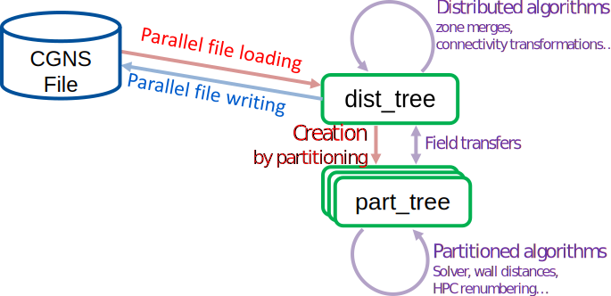

User Manual¶
Maia methods are accessible through three main modules :
Factory allows to generate Maia trees, generally from another kind of tree (e.g. the partitioning operation). Factory functions return a new tree whose nature generally differs from the input tree.
Algo is the main Maia module and provides parallel algorithms to be applied on Maia trees. Some algorithms are only available for distributed trees and some are only available for partitioned trees. A few algorithms are implemented for both kind of trees and are thus directly accessible through the algo module.
Algo functions either modify their input tree inplace, or return some data, but they do not change the nature of the tree.
Transfer is a small module allowing to transfer data between Maia trees. A transfer function operates on two existing trees and enriches the destination tree with data fields of the source tree.
Using Maia trees in your application often consists in chaining functions from these different modules.
A typical workflow could be:
Load a structured tree from a file, which produces a dist tree.
Apply some distributed algorithms to this tree: for example a structured to unstructured conversion (
algo.distmodule).Generate a corresponding partitionned tree (
factorymodule).Apply some partitioned algorithms to the part tree, such as wall distance computation (
algo.partmodule), and even call you own tools (e.g. a CFD solver)Transfer the resulting fields to the dist tree (
transfermodule).Save the updated dist tree to disk.
This user manuel describes the main functions available in each module.